Moederklodder
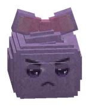
LootBuit
1 roll(s), each 35% chance on gear; rarity rolled with luck 1.0.1 keer rollen, elke keer 35% kans op uitrusting; de zeldzaamheid met geluk 1.0. CoinsMunten: 10-30 bronzebrons.
| Item | Chance per rollKans per rol |
|---|---|
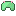 Slijmmutsje | 3.8% |
 Plakpantoffels Plakpantoffels | 3.8% |
 Bubbelvest Bubbelvest | 2.8% |
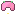 Klodderkapje | 1.9% |
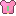 Klodderhesje | 1.9% |
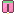 Klodderbroek | 1.9% |
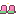 Klodderstuiters | 1.9% |
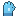 Kloddergrijpers | 1.9% |
| Kussenzwaard | 0.9% |
| Knuffelknots | 0.9% |
| Pluishamer | 0.9% |
 Klodderkling Klodderkling | 0.9% |
| Pluisboog | 0.9% |
| Druppelboog | 0.9% |
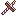 Snoepkruisboog | 0.9% |
 Eikelkatapult Eikelkatapult | 0.9% |
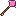 Rozenstaf | 0.9% |
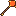 Vlammenstaf | 0.9% |
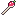 Zwamstokje | 0.9% |
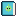 Slijmboek | 0.9% |
 Pluiswantjes Pluiswantjes | 0.9% |
 Knuffelcapeje Knuffelcapeje | 0.9% |
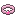 Pluisarmband | 0.9% |
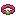 Rozenarmbandje | 0.9% |
Hidden by your spoiler setting.Verborgen door je spoilerinstelling.